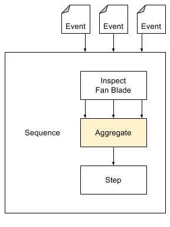

The aggregate service notifies you when all events from a Job have been handled successfully.
Imagine a turbine inspection service that handles events to check the strength each of 30 fan blades. You have now a collection of 30 downstream events, but these related events are processed asynchronously. Naturally all 30 fan blades must pass, in order for the turbine to be certified as worthy. How do you wait until the strength checks for all fan blades are completed?
JobId
The aggregation output event, when emitted, will carry two parameters.
Related events can be retrieved by querying the messages with dynamic SOQL.
Database.query and cast the result to List<sObject>.
sobject.get() to dereference it, then cast to Map<String,Object> when deserializing the value.